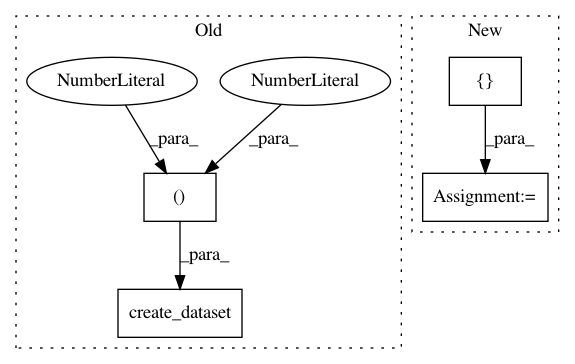

71b1e873e70dca43cd12870d4c0f497015f41970,examples/combine/plot_comparison_combine.py,,,#,106
Before Change
fig, ((ax1, ax2), (ax3, ax4), (ax5, ax6)) = plt.subplots(3, 2, figsize=(15, 25))
X, y = create_dataset(n_samples=1000, weights=(0.1, 0.2, 0.7))
ax_arr = ((ax1, ax2), (ax3, ax4), (ax5, ax6))
for ax, sampler in zip(
ax_arr,
After Change
from imblearn.pipeline import make_pipeline
from sklearn.svm import LinearSVC
samplers = [SMOTE(random_state=0), SMOTEENN(random_state=0), SMOTETomek(random_state=0)]
fig, axs = plt.subplots(3, 2, figsize=(15, 25))
for ax, sampler in zip(axs, samplers):
clf = make_pipeline(sampler, LinearSVC()).fit(X, y)
In pattern: SUPERPATTERN
Frequency: 3
Non-data size: 4
Instances
Project Name: scikit-learn-contrib/imbalanced-learn
Commit Name: 71b1e873e70dca43cd12870d4c0f497015f41970
Time: 2021-02-17
Author: g.lemaitre58@gmail.com
File Name: examples/combine/plot_comparison_combine.py
Class Name:
Method Name:
Project Name: calico/basenji
Commit Name: b5cac138037548c6c12c3a1b052f16a34c665162
Time: 2016-12-19
Author: drk@calicolabs.com
File Name: bin/basenji_sat.py
Class Name:
Method Name: parse_input
Project Name: ilastik/ilastik
Commit Name: 23bf9b02f92cbebc772fe0574b69a598aa3cd367
Time: 2015-11-25
Author: bergs@janelia.hhmi.org
File Name: ilastik/applets/featureSelection/featureSelectionSerializer.py
Class Name: FeatureSelectionSerializer
Method Name: _serializeToHdf5